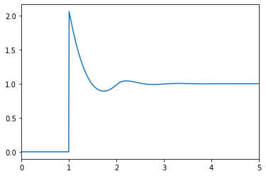

Calling from Python
Using OrnsteinZernike from Python is straighforward
Installing
First, install juliacall through the pip package manager, with
pip install juliacallThis package allows one to call julia from python
In Python (only versions $\geq$ 3 are supported), run:
from juliacall import Main as jlwhich will install the latest stable version of Julia the first time it is called. Now install OrnsteinZernike.jl with
jl.Pkg.add("OrnsteinZernike")To import this package in order to use it we need to run:
jl.seval("using OrnsteinZernike")The jl.seval function let's us evaluate any julia code from within Python.
Usage
We can now use OrnsteinZernike.jl in Python:
from juliacall import Main as jl
jl.seval("using OrnsteinZernike")
dims = 3
kBT = 1.0
rho = 0.5
potential = jl.HardSpheres(1.0)
system = jl.SimpleLiquid(dims, rho, kBT, potential)
closure = jl.PercusYevick()
sol = jl.solve(system, closure)
import matplotlib.pyplot as plt
plt.plot(sol.r, sol.gr)
plt.xlim(0, 5)
plt.show()
See the documentation of juliacall for more information on how to call Julia from Python.